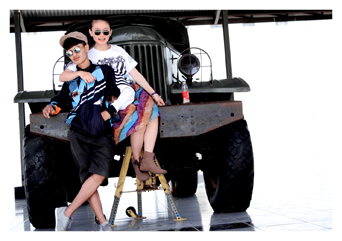
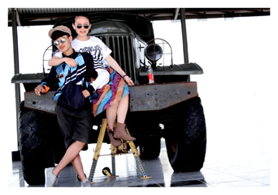
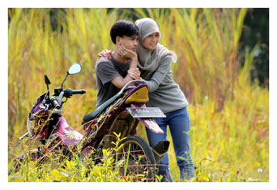
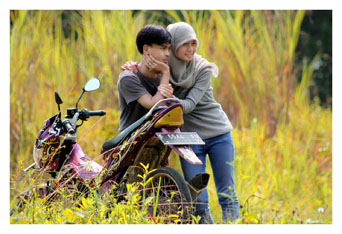

Moch Gilang Fadilah
 
  
Pemograman Web 1 Saya selaku Mahasiswa Universitas pasundan mengucapkan terima kasih kepada Dosen Pemograman Web1 Fajar darmawan.ST dan kepada Pebimbing Praktikum kang Erik Febrisani Ramadhan, Didik Kurniawan, Opik sutisna yang telah memberi banyak ilmu pemograman web1, saya sangat bangga sekali dapat mengetahui tentang web.
Kritik

Fajar Darmawan.ST
Asik cara penyampaianya Mudah di pahami, tidak tegang dan santai
Didik Kurniawan
Asik cara penyampaianya Mudah di pahami, Tetapi agak tegang dan santai.
Opik sutisna
Asik cara penyampaianya Mudah di pahami, tidak tegang tegang dan santai, namun cara penyampainnya dengan suara yang pelan terkadang suka tidak mengerti heheh.
Asik cara penyampaianya Mudah di pahami, tidak tegang tegang dan santai, namun cara penyampainnya dengan suara yang pelan terkadang suka tidak mengerti heheh.
Erik Febrisani Ramadhan
Asik cara penyampaianya Mudah di pahami, tidak tegang tegang dan santai, Oranya terlihat Pendiam dan Jarang Menerangkan di depan, dia lebih baik langsung ke lapangan hehheheeh.
Asik cara penyampaianya Mudah di pahami, tidak tegang tegang dan santai, Oranya terlihat Pendiam dan Jarang Menerangkan di depan, dia lebih baik langsung ke lapangan hehheheeh.